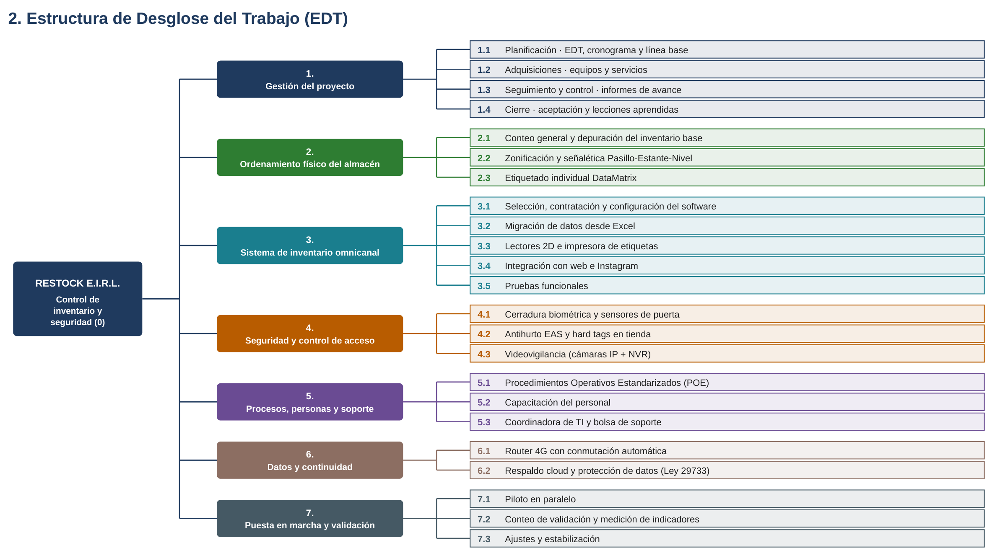
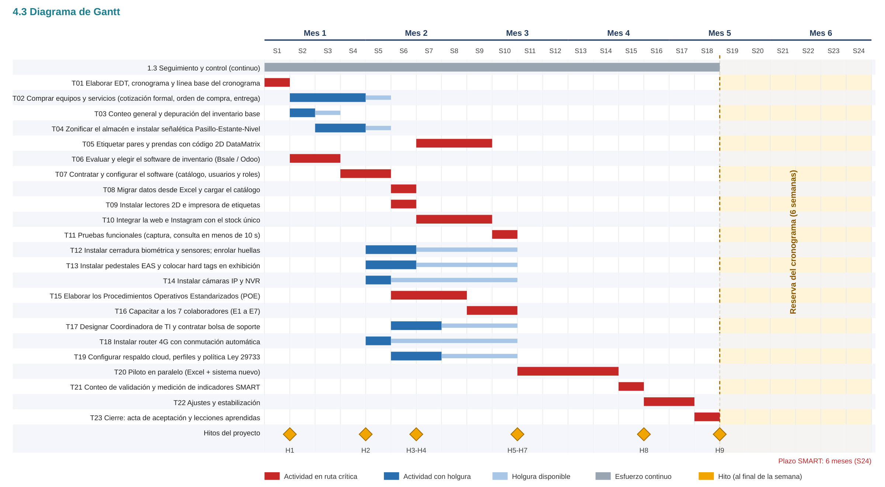
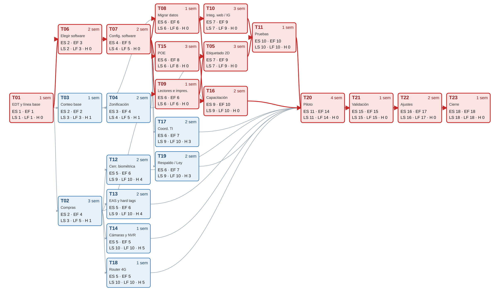

Capítulo 1 · Situación del Negocio y Pérdidas Actuales
El negocio de Restock y sus productos
Qué vende Restock, qué ocurre con sus productos y qué afecta a sus ventas.
1.1 ¿A qué se dedica Restock y cómo vende?
Restock E.I.R.L. (conocida como Restock Perú) es una tienda peruana dedicada a la venta de zapatillas urbanas exclusivas y de colección (marcas como Nike Jordan, Dunk, Adidas Yeezy), además de ropa urbana y accesorios. Vende de dos formas:
restock.com.pe), Instagram (@restock.pe) y WhatsApp. Los clientes eligen su par y coordinan el pago por transferencia. Se atienden unos 180 pedidos al mes con una compra promedio de S/ 780.00 por cliente.1.2 ¿Qué problema ocurre hoy en el almacén y la tienda?
Todo el stock se anota a mano en un archivo de Excel que varias personas modifican a la vez, además de mensajes sueltos en WhatsApp y papelitos. La tienda maneja unas 300 zapatillas y 200 prendas y accesorios.
Faltan zapatillas en los conteos
En el último conteo general, el Excel decía que debían haber 300 pares. Al contar a mano solo encontraron 262 pares (87.3% del stock). Tras buscar por días aparecieron 10 cajas escondidas (90.7% final comprobado), pero 28 pares nunca aparecieron (9.3% de pérdida).
Almacén desordenado y llaves sin control
Los estantes no tienen letreros ni códigos. Como las cajas de Jordan y Dunk se parecen mucho a simple vista, el personal tarda entre 8 y 12 minutos buscando cada par. Además, hay 4 llaves del almacén repartidas y cualquiera entra sin que quede anotado quién sacó una zapatilla.
Problemas con las ventas por internet
Como la página web se actualiza a mano recién al final del día, muchas veces un cliente compra en la tienda un par que minutos después otro cliente paga por WhatsApp. Esto obliga a cancelar entre 9 y 12 pedidos al mes, provocando reclamos y clientes molestos en redes sociales.
1.3 ¿Cuál es el impacto económico anual de estas diferencias?
Al revisar la información con gerencia, almacén, ventas y contabilidad, se estimó un impacto anual de S/ 51,252 con precios promedio y de S/ 71,456 con la valorización auditada de los productos. El cálculo considera mermas, pedidos cancelados, ventas no concretadas en tienda y horas dedicadas a los conteos:
| ¿En qué se pierde dinero? | Cálculo Base | Cálculo Real Auditado | ¿Quién dio la información y cómo se calculó? |
|---|---|---|---|
| Zapatillas perdidas o desaparecidas | S/ 19,600 | S/ 25,640 | E1 (Gerente General) y E3 (Jefe de Almacén): 28 pares que faltaron en el último conteo, valorizados al precio real de cada modelo (varias son ediciones caras). |
| Ganancia perdida y gastos por pedidos web cancelados | S/ 20,000 | S/ 33,612 | E1 (Gerente) y E2 (Contador): 126 pedidos cancelados al año (9 a 12 al mes). Se pierde la ganancia real de 26.4% más S/ 60.84 en gastos de banco y envíos por cada pedido devuelto. |
| Subtotal reconocido por la Gerencia | S/ 39,600 | S/ 59,252 | Pérdida directa de dinero que golpea la caja del negocio. |
| Ventas perdidas en tienda por no encontrar la talla | S/ 6,552 | S/ 7,104 | E5 (Jefe de Ventas) y E6 (Vendedor): Clientes que piden probarse una talla, el vendedor demora buscando y el cliente se cansa y se va sin comprar (unos 42 clientes al año). |
| Sueldos pagados por horas perdidas en contar y cuadrar | S/ 5,100 | S/ 5,100 | E2 (Contador), E3 (Almacén) y E4 (Auxiliar): 60 días de trabajo al año dedicados solo a contar cajas a mano y buscar errores en Excel (a S/ 85 el día de trabajo en planilla). |
| TOTAL DE DINERO EN RIESGO AL AÑO | S/ 51,252 | S/ 71,456 | Monto total que el proyecto busca recuperar y proteger. |
Antes se calculaba un precio promedio simple de S/ 700 por par (S/ 19,600). Pero al revisar la lista real con E3 (Almacén) y E2 (Contador), vimos que los pares perdidos son modelos caros de colección:
| Grupo de zapatillas | Cantidad | Modelos de ejemplo | Precio real | Total |
|---|---|---|---|---|
| Tier 1: Edición Limitada / Colección | 6 pares | Air Jordan 1 Travis Scott, Lost & Found | S/ 1,650 | S/ 9,900 |
| Tier 2: Modelos Exclusivos | 10 pares | Jordan 4 Military Black, Yeezy 350 | S/ 950 | S/ 9,500 |
| Tier 3: Zapatillas Urbanas Regulares | 12 pares | Nike Dunk Low Panda, Air Force 1 | S/ 520 | S/ 6,240 |
| TOTAL REAL AUDITADO | 28 pares | Precio promedio real: S/ 915.71 por par | — | S/ 25,640 |
Esto demuestra que se perdió un 30.8% más de dinero de lo que se pensaba inicialmente.
Los conteos se hacen cada 2 meses. Al revisar los registros con E3 (Jefe de Almacén), se comprobó que siempre faltan zapatillas: en el Conteo Bimestral 1 faltaron 8 pares; en el Conteo Bimestral 2 faltaron 9 pares; y en el Conteo Bimestral 3 faltaron 11 pares. En promedio se pierden 9.33 pares por conteo bimestral (un 3.11% del inventario cada dos meses). No fue un caso aislado, es una fuga constante.
1.4 Productos que vende la tienda
Zapatillas de Colección
Zapatillas urbanas exclusivas (Nike Jordan, Dunk, Adidas Yeezy). Modelos difíciles de conseguir y tallas únicas.
Ropa Urbana
Poleras, pantalones y camisetas de marcas de colección streetwear.
Accesorios y Limpieza
Gorras de colección, medias y kits especiales de limpieza y cuidado para zapatillas.
La empresa y su situación actual
La empresa y la información recogida
Descripción de la empresa, entrevistas, encuestas y observaciones de la situación actual.
Evidencias fotográficas
2.1 Condiciones del entorno de la empresa
Factores Internos
Factores Externos
Organigrama (Figura 2)
2.2 Documentos y recursos actuales de la empresa
2.3 Entrevistas y encuestas
Entrevistas del 14 al 26 de setiembre de 2026. Cuestionarios impresos del 28 de setiembre al 2 de octubre de 2026.
2.3.1 Revisión de los instrumentos
La revisión por juicio de expertos de los instrumentos de entrevista y encuesta estará a cargo de dos docentes de la Escuela Profesional de Ingeniería de Sistemas:
Escuela Profesional de Ingeniería de Sistemas
Correo: wcandia@untels.edu.pe
2.3.2 Entrevistas al personal
Consulta el instrumento aplicado para realizar las entrevistas al personal.
Abrir instrumento de entrevista (PDF)Entrevista 1 · Gerencia y Administración
Semi-estructurada, presencial, en la oficina de dirección, con audio. 12 preguntas en 8 dimensiones.
Entrevista 2 · Almacén e Inventarios
Semi-estructurada, en el almacén, con audio. 9 preguntas.
Entrevista 3 · Ventas y Tienda
Semi-estructurada, en la tienda, con audio. 7 preguntas.
Entrevista 4 · Marketing y E-commerce
Semi-estructurada, en la oficina, con audio. 6 preguntas.
2.3.3 Encuestas al personal
Cada persona marcó su nivel de acuerdo en una escala de 1 (totalmente en desacuerdo) a 5 (totalmente de acuerdo). Un puntaje alto significa que el problema está presente. De 1,00 a 2,33 es nivel bajo · De 2,34 a 3,66 medio · De 3,67 a 5,00 alto.
2.3.4 Resumen de resultados
Datos del último conteo
El expediente técnico registra 300 pares: 262 encontrados al primer conteo, 10 recuperados después y 28 sin localizar. La referencia actual es de 272 pares de 300 (90.7%).
Personas involucradas en la operación actual
Personas relacionadas con Restock
Incluye al equipo, a los clientes y a los proveedores relacionados con las actividades de la empresa.
3.1 Personas que participan en la operación
Se consideran siete personas que trabajan en Restock E.I.R.L. y tres grupos externos relacionados con sus actividades:
Carlos — Gerente General
Dirección
Dirige la empresa y toma las principales decisiones comerciales y financieras.
Luis — Contador / Administrador
Administración
Lleva las cuentas y los registros de compras, ventas y pérdidas de productos.
Jorge — Jefe de Almacén
Almacén
Se encarga de los productos guardados, recibe mercadería y prepara pedidos. Tiene una de las cuatro llaves del almacén.
Kevin — Auxiliar de Almacén
Almacén
Ordena cajas, busca productos, coloca etiquetas y realiza conteos.
Marcos — Jefe de Ventas
Ventas
Supervisa la tienda y coordina las ventas y entregas. Tiene una llave del almacén.
Renzo — Vendedor de Tienda
Tienda
Atiende a los clientes, cobra y consulta la disponibilidad de tallas.
Valeria — Especialista de Marketing
Ventas por internet
Actualiza el catálogo de la página web, publica en redes sociales y atiende pedidos por WhatsApp.
Clientes
Grupo externo
Compran los productos y pueden compartir su experiencia sobre la atención y disponibilidad.
Proveedores e Importadores
Abastecimiento
Suministran calzado y ropa a la empresa y coordinan la entrega de los pedidos.
Proveedores de servicios
Servicios externos
Brindan equipos, acceso a internet y ayuda cuando surgen problemas con esos servicios.
3.2 Matriz de Poder de los Stakeholders
| Interesado (Código) | Poder | Interés | Actitud |
|---|---|---|---|
| Gerente General (E1) | Alto | Alto | Favorable |
| Contador / Administrador (E2) | Medio | Alto | Favorable |
| Jefe de Almacén (E3) | Medio | Alto | Favorable |
| Auxiliar de Almacén (E4) | Bajo | Alto | Favorable |
| Jefe de Ventas (E5) | Medio | Alto | Favorable |
| Vendedor de Tienda (E6) | Bajo | Alto | Favorable |
| Especialista de Marketing (E7) | Bajo | Alto | Favorable |
| Clientes (X1) | Bajo | Alto | Crítica |
| Proveedores de Calzado (X2) | Medio | Bajo | Neutral |
| Proveedores de servicios (X3) | Medio | Medio | Favorable |
3.3 Necesidades y dificultades actuales
Se resumen las principales necesidades expresadas por el equipo y las dificultades que enfrenta actualmente en sus labores:
Árbol de problemas
Problemas de inventario: causas y efectos
Resumen de las causas observadas y de sus efectos en la empresa.
Pérdida de trazabilidad y visibilidad en tiempo real del inventario físico, con alta vulnerabilidad ante mermas y accesos no registrados en el almacén de Restock.
4.1 Efectos del Problema
Pérdida de rentabilidad y de competitividad
La empresa no puede crecer ni ampliar sus canales sin aumentar sus pérdidas. (estimación de Gerencia: ≈ S/ 40,000 al año)
Pérdidas económicas
Por mermas de mercadería de alto valor, sustracciones y ventas online canceladas.
Clientes insatisfechos y reputación dañada
En web e Instagram por pedidos cancelados.
Desfases entre el registro y las existencias físicas. (En el conteo documentado de 300 pares, 28 quedaron sin localizar.)
Detección tardía o nula de mermas y sustracciones internas. (4 pares de edición limitada en 2 casos en 12 meses)
Cancelaciones de compras online por falta de stock real. (9 a 12 pedidos al mes)
4.2 Causas del Problema
No se sabe dónde está cada par: identificación y ubicación física deficientes
No se sabe qué hay en tiempo real: el registro es manual y se actualiza con retraso
No se sabe quién movió los productos: faltan controles de acceso y vigilancia
La operación no cuenta con procedimientos ni capacitación formales
Los datos y el soporte dependen de medios frágiles
Objetivos y costos
Objetivos y alternativas para el inventario
Objetivos y acciones para mejorar el control del inventario y la atención al cliente.
5.1 Objetivo central y metas
El árbol presenta los resultados esperados y reúne sus metas medibles en un objetivo central, con un plazo común de cumplimiento.
Impulsar la competitividad y el crecimiento sostenible de Restock E.I.R.L. mediante un mejor control de productos y la seguridad del almacén.
Agilizar la atención y fortalecer la confianza de los clientes.
Reducir las pérdidas de productos y proteger la rentabilidad.
Tomar mejores decisiones con información clara y actualizada.
Aumentar la disponibilidad de productos, mejorar la exactitud de los registros y reducir la exposición a pérdidas.
En un plazo máximo de seis meses, Restock E.I.R.L. mejorará el control del inventario y la atención al cliente para alcanzar una exactitud mínima del 99% (como máximo tres pares sin explicación), limitar a 3 al mes las cancelaciones por falta de productos, consultar la disponibilidad en caja en menos de 10 segundos, ubicar un producto en menos de 2 minutos, registrar el 100% de los accesos al almacén y completar el conteo general en medio día o menos.
S · Específico: Mejorar el control de productos y la atención.
M · Medible: Exactitud, cancelaciones, tiempos de consulta y búsqueda, accesos y duración del conteo.
A · Alcanzable: Con mejor organización, registros y seguimiento.
R · Relevante: Protege productos, ventas y atención al cliente.
T · Temporal: En un máximo de seis meses.
Ordenar los productos y definir dónde se guardan.
Unificar el registro de entradas, ventas y salidas.
Mejorar el cuidado del almacén y el control de acceso.
Definir lugares para guardar cada producto.
Elegir recursos que se ajusten a las necesidades de la empresa.
Mantener un registro común y actualizado.
Preparar al personal en prácticas comunes.
Acordar reglas claras para ingresar y retirar productos.
Revisar de forma continua el almacén y sus productos.
| Indicador | Situación actual | Importancia para la empresa |
|---|---|---|
| Exactitud del inventario | 90.7% (272 de 300; 87.3% en el conteo inicial) | Permite conocer si los registros coinciden con los productos disponibles. |
| Cancelaciones de pedidos online por falta de stock | 9 a 12 pedidos al mes | Afectan las ventas y la experiencia de los clientes. |
| Tiempo para consultar disponibilidad en caja | 5 a 10 minutos (por WhatsApp) | Influye en el tiempo de atención en la tienda. |
| Tiempo para encontrar un producto en almacén | 8 a 12 minutos | Ocupa parte del tiempo destinado a otras tareas. |
| Ingresos al almacén registrados | 0% (cuatro llaves sin registro) | No se puede identificar quién ingresó ni a qué hora. |
| Duración del conteo general de productos | Un día y medio, con cuatro personas | Requiere varias personas y afecta la atención de la tienda. |
5.2 Acciones para alcanzar los objetivos
Para alcanzar los objetivos se formulan acciones técnicas, clasificadas en excluyentes (decisiones tecnológicas de arquitectura) y complementarias (indispensables en cualquier escenario):
| Medio Fundamental | Código | Acción Propuesta | Carácter |
|---|---|---|---|
| M-1.1 Posición codificada | A1.1 | Zonificación física e instalación de señalética Pasillo-Estante-Nivel | Complementaria |
| M-1.2 Identificación unívoca | A1.2 | Etiquetado individual con códigos 2D DataMatrix (marca, silueta, colorway, talla, serial) | Complementaria |
| M-2.1 Captura digital en sitio | A2.1a | Pistolas lectoras 2D inalámbricas industriales de alta velocidad (Zebra DS2278) | Excluyente (a) |
| M-2.1 Captura digital en sitio | A2.1b | Aplicación móvil de escaneo mediante la cámara de smartphones personales | Excluyente (b) |
| M-2.2 Base de datos única | A2.2 | Migración de Excel a software COTS SaaS omnicanal con base de datos en la nube | Complementaria |
| M-2.3 Consulta omnicanal | A2.3 | Sincronización API web/Instagram y consulta en caja en menos de 10 segundos | Complementaria |
| M-3.1 Control de acceso | A3.1a | Cerradura inteligente biométrica/RFID con bitácora digital auditable de aperturas | Excluyente (a) |
| M-3.1 Control de acceso | A3.1b | Cerradura convencional con cuaderno físico de firmas y control manual de llaves | Excluyente (b) |
| M-3.2 Monitoreo de almacén | A3.2a | Sensores magnéticos IoT propios en puertas con alertas push directas al smartphone | Excluyente (a) |
| M-3.2 Monitoreo de almacén | A3.2b | Servicio de central receptora de alarmas monitoreada por empresa de seguridad externa | Excluyente (b) |
| M-3.2 Verificación visual | A3.2c | Kit de 4 cámaras IP de alta resolución PoE y NVR con grabación continua para auditoría forense | Complementaria |
| M-3.3 Seguridad en tienda | A3.3a | Pedestales antihurto EAS acustomagnéticos (AM 58 kHz) y hard tags en calzado exhibido | Excluyente (a) |
| M-3.3 Seguridad en tienda | A3.3b | Vitrinas cerradas con llave mecánica para exhibición de calzado en mostrador | Excluyente (b) |
| M-4.1 Estandarización | A4.1 | Elaboración de Procedimientos Operativos Estandarizados (POE) | Complementaria |
| M-4.2 Capacitación | A4.2 | Talleres prácticos de capacitación para los 7 colaboradores (E1 a E7) | Complementaria |
| M-5.1 Respaldo y datos | A5.1 | Respaldo cloud diario y política técnica de la Ley N.º 29733 de Protección de Datos | Complementaria |
| M-5.2 Enlace de TI | A5.2 | Designación formal de Coordinadora de TI y Datos con bolsa de soporte externo | Complementaria |
| M-5.3 Contingencia | A5.3 | Router 4G LTE con conmutación por error (failover) automática ante caídas de fibra | Complementaria |
5.3 Alternativas para mejorar el control
Al combinarse las 4 acciones excluyentes (Captura: 2D vs. Celular; Acceso: Biometría vs. Cuaderno; Monitoreo: IoT propio vs. Central externa; Tienda: EAS vs. Vitrinas) surgen formalmente 2⁴ = 16 combinaciones posibles.
Alternativa 0 — Línea de Base (No Hacer Nada)
Se mantienen el archivo Excel compartido, la cerradura común con 4 llaves y la ausencia de alarmas en tienda. Inversión inicial de S/ 0, pero perpetúa un Valor en Riesgo de S/ 51,252 al año (S/ 153,756 en el horizonte de 3 años sin descontar).
Alternativa 1 — Herramientas propias para el control
Lectores 2D industriales (A2.1a) + Cerradura biométrica/RFID (A3.1a) + Sensores IoT propios (A3.2a) + Sistema EAS acustomagnético (A3.3a), integrando todas las acciones complementarias. Máxima velocidad de captura (< 0.3s) y soberanía operativa sin cuotas mensuales.
Alternativa 2 — Baja Tecnología y Tercerización
Escaneo con smartphones personales (A2.1b) + Cuaderno de firmas manual (A3.1b) + Central de alarmas monitoreada por terceros (A3.2b) + Vitrinas cerradas con llave (A3.3b). Menor inversión inicial, pero con una mensualidad permanente que dispara el OPEX.
Alternativa 3 — Intermedia (Smartphones + Seguridad Activa)
Escaneo con smartphones (A2.1b) + Cerradura biométrica (A3.1a) + Sensores IoT propios (A3.2a) + Sistema EAS (A3.3a). Evalúa si prescindir de los lectores 2D genera un ahorro que compense la menor productividad de los vendedores.
Se documenta el sustento técnico y operativo por el cual se descartaron las restantes 13 combinaciones resultantes del análisis morfológico de alternativas:
| N.º | Combinación Morfológica | Descripción de la Mezcla | Motivo Técnico / Operativo del Descarte |
|---|---|---|---|
| Comb 2 | A2.1a + A3.1a + A3.2a + A3.3b | Lectores 2D + Biometría + IoT + Vitrinas con llave | Incoherencia comercial: alta tecnología en almacén pero experiencia de compra bloqueada en sala por vitrinas que demoran la prueba de calzado. |
| Comb 3 | A2.1a + A3.1a + A3.2b + A3.3a | Lectores 2D + Biometría + Central externa + EAS | Solapamiento de costos: duplica el costo de biometría propia con la cuota mensual de central externa (OPEX inflado innecesariamente). |
| Comb 4 | A2.1a + A3.1a + A3.2b + A3.3b | Lectores 2D + Biometría + Central externa + Vitrinas | Alternativa dominada: combina el alto costo recurrente de la central externa con la ineficiencia operativa de vitrinas en salón. |
| Comb 5 | A2.1a + A3.1b + A3.2a + A3.3a | Lectores 2D + Cuaderno firmas + IoT + EAS | Contradicción flagrante: pistolas láser y sensores IoT de vanguardia conviviendo con un cuaderno de papel vulnerable a firmas falsas. |
| Comb 6 | A2.1a + A3.1b + A3.2a + A3.3b | Lectores 2D + Cuaderno + IoT + Vitrinas | Brecha de trazabilidad: mantiene el almacén a ciegas en accesos y entorpece la atención en sala, anulando la agilidad del escaneo 2D. |
| Comb 7 | A2.1a + A3.1b + A3.2b + A3.3a | Lectores 2D + Cuaderno + Central externa + EAS | Inconsistencia de seguridad: la central no sabe quién entra por el uso de llaves físicas con cuaderno, generando falsas alarmas operativas. |
| Comb 8 | A2.1a + A3.1b + A3.2b + A3.3b | Lectores 2D + Cuaderno + Central externa + Vitrinas | Solución ineficiente: gasto en lectores 2D desperdiciado por cuellos de botella en cuadernos y búsqueda de llaves de vitrinas. |
| Comb 10 | A2.1b + A3.1a + A3.2a + A3.3b | Smartphones + Biometría + IoT + Vitrinas | Doble fricción: personal desmotivado por usar su celular y clientes esperando por llaves de vitrinas; pérdida de ventas presenciales. |
| Comb 11 | A2.1b + A3.1a + A3.2b + A3.3a | Smartphones + Biometría + Central externa + EAS | Ineficiencia financiera: alto OPEX recurrente por monitoreo externo mientras el escaneo en caja sufre lentitud por uso de cámaras. |
| Comb 12 | A2.1b + A3.1a + A3.2b + A3.3b | Smartphones + Biometría + Central externa + Vitrinas | Inviabilidad operativa: máxima lentitud en caja (> 30 segundos) combinada con sobrecosto recurrente de central externa. |
| Comb 13 | A2.1b + A3.1b + A3.2a + A3.3a | Smartphones + Cuaderno + IoT propios + EAS | Falsa seguridad: el sistema EAS suena en puerta pero no se puede auditar si el hurto fue perpetrado por personal interno con llave mecánica. |
| Comb 14 | A2.1b + A3.1b + A3.2a + A3.3b | Smartphones + Cuaderno + IoT propios + Vitrinas | Alternativa precaria: carece de captura profesional y mantiene la vulnerabilidad total de custodia en almacén. |
| Comb 15 | A2.1b + A3.1b + A3.2b + A3.3a | Smartphones + Cuaderno + Central externa + EAS | Desequilibrio técnico: mercadería protegida con EAS pero stock desfasado en sistema por escaneo lento y cuaderno manual en almacén. |
Estas tres alternativas se comparan por sus costos y características.
5.4 Presupuesto de equipos y servicios
Presupuesto Detallado de Equipamiento y Cotizaciones Formales (con IGV)
| Componente / Equipo | Especificación Técnica y Modelo | Cant. | Costo sin IGV | Costo con IGV (18%) | Función Operativa en la Solución |
|---|---|---|---|---|---|
| Dispositivos de Captura Rápida | Lectores inalámbricos 2D Zebra DS2278 con base de transmisión USB | 2 und | S/ 1,177.97 | S/ 1,390.00 | Lectura omnidireccional en almacén y caja; consulta de existencias en < 10s. |
| Control de Acceso al Almacén | Cerradura biométrica ZKTeco TL400B con huella digital + sensores Sonoff | 1 kit | S/ 840.00 | S/ 991.20 | Erradica las 4 llaves físicas; registra bitácora forense de ingresos y alerta en tiempo real. |
| Protección Antihurto en Salón | Pedestales de seguridad acustomagnéticos (AM) + 500 hard tags tipo pinza | 1 kit | S/ 3,620.00 | S/ 4,271.60 | Protege las zapatillas en exhibición (S/ 35k-55k) disuadiendo hurtos en piso de venta. |
| Sistema de Etiquetado Térmico | Impresora Zebra ZD220t + 5,000 etiquetas autoadhesivas de alta durabilidad | 1 und | S/ 1,100.00 | S/ 1,298.00 | Rotulado con código de barras de cada caja de calzado y prenda streetwear. |
| Software de Inventario Cloud | Suscripción anual a software COTS (Bsale / Odoo) con base de datos en la nube | 1 lic | S/ 1,200.00 | S/ 1,416.00 | Centraliza el Kardex contable, elimina el Excel y sincroniza tiendas y canales online. |
| Circuito Cerrado de Televisión | Kit de 4 cámaras IP PoE Full HD + NVR con almacenamiento de 1TB (30 días) | 1 kit | S/ 1,800.00 | S/ 2,124.00 | Monitoreo visual continuo en pasillos de almacén y mostrador de atención. |
| Conectividad Móvil de Respaldo | Router 4G LTE TP-Link Archer MR600 con failover automático y chip de datos | 1 und | S/ 350.00 | S/ 413.00 | Mantiene la facturación y ventas asistidas durante los 14-18h de corte mensual de fibra. |
| Codificación Inicial de Almacén | Servicio de rotulado de anaqueles Pasillo-Estante-Nivel y etiquetado base | 1 serv | S/ 510.00 | S/ 601.80 | Zonificación física de depósito para agilizar los conteos cíclicos a menos de 2 horas. |
| Seguridad de Datos y Roles | Configuración de perfiles de usuario, copias de seguridad y Ley N.º 29733 | 1 serv | S/ 800.00 | S/ 944.00 | Privilegios segmentados y protección de datos personales de clientes sneakerheads. |
| Capacitación al Personal | Programa de inducción y manuales de procedimiento (POE) para 7 colaboradores | 1 serv | S/ 500.00 | S/ 590.00 | Asegura adopción operativa del personal de almacén y mostrador sin resistencia al cambio. |
| SUBTOTAL INVERSIÓN DIRECTA | S/ 12,110.00 | S/ 14,289.80 | Costo total de equipamiento, software y servicios de implantación. | ||
| Contingencia Técnica Imprevistos (10%) | S/ 1,211.00 | S/ 1,428.98 | Fondo de reserva para imprevistos de cableado, adaptadores o calibración. | ||
| INVERSIÓN TOTAL REQUERIDA (CAPEX) | S/ 13,321.00 | S/ 15,718.78 | Monto total con IGV incluido. | ||
Costos iniciales y anuales por alternativa (CAPEX y OPEX)
| Concepto Presupuestal | Alternativa 1 (Integral 2D) | Alternativa 2 (Celulares & Terceros) | Alternativa 3 (Intermedia) |
|---|---|---|---|
| Dispositivos de captura (Lectores 2D vs. Celulares) | S/ 1,390 | S/ 0 | S/ 0 |
| Seguridad de almacén (Cerradura biométrica + IoT) | S/ 840 | S/ 600 | S/ 840 |
| Seguridad en tienda (Pedestales EAS vs. Vitrinas) | S/ 3,620 | S/ 3,500 | S/ 3,620 |
| Etiquetado (Impresora Zebra ZD220t + rollos) | S/ 1,100 | S/ 1,100 | S/ 1,100 |
| Software COTS inventario & base de datos cloud | S/ 1,200 | S/ 1,200 | S/ 1,200 |
| Levantamiento inicial y etiquetado físico | S/ 510 | S/ 510 | S/ 510 |
| Videovigilancia (4 cámaras IP PoE + NVR 1TB) | S/ 1,800 | S/ 1,800 | S/ 1,800 |
| Respaldo cloud y política Ley N.º 29733 | S/ 800 | S/ 800 | S/ 800 |
| Router 4G LTE con failover de contingencia | S/ 350 | S/ 350 | S/ 350 |
| Capacitación para 7 colaboradores y manuales POE | S/ 500 | S/ 500 | S/ 500 |
| Subtotal Inversión Directa | S/ 12,110 | S/ 10,360 | S/ 10,720 |
| Contingencia Técnica (10%) | S/ 1,211 | S/ 1,036 | S/ 1,072 |
| INVERSIÓN INICIAL TOTAL (CAPEX) | S/ 13,321 | S/ 11,396 | S/ 11,792 |
| Hosting cloud, base de datos y backups diarios | S/ 1,200 / año | S/ 1,200 / año | S/ 1,200 / año |
| Consumibles de etiquetado y mantenimiento | S/ 600 / año | S/ 600 / año | S/ 600 / año |
| Bolsa de soporte técnico externo especializado | S/ 1,200 / año | S/ 1,200 / año | S/ 1,200 / año |
| Plan de datos 4G de contingencia | S/ 480 / año | S/ 480 / año | S/ 480 / año |
| Suscripción a central externa de alarmas | S/ 0 / año | S/ 3,000 / año | S/ 0 / año |
| COSTO OPERATIVO ANUAL (OPEX) | S/ 3,480 / año | S/ 6,480 / año | S/ 3,480 / año |
Cronograma del proyecto TI
Organización del trabajo y fechas
Actividades, responsables, duración prevista y línea base del proyecto de control de inventario y seguridad para Restock.
Abrir documento completo de cronograma y EDT (PDF)6.1 Alcance y estructura de trabajo
El proyecto se desarrollará en un máximo de seis meses. Incluye ordenar y etiquetar los productos, configurar el sistema de inventario, instalar los equipos de seguridad, preparar procedimientos y capacitar al personal.
Resultados que se deben alcanzar
Exactitud del inventario de al menos 99%, no más de 3 cancelaciones mensuales por falta de existencias, consultas en caja en menos de 10 segundos, búsqueda de productos en menos de 2 minutos, registro del 100% de los accesos y conteo general en medio día o menos.
Etapas principales
Gestión del proyecto; ordenamiento del almacén; sistema de inventario; seguridad y control de acceso; procedimientos, personas y soporte; datos y continuidad; puesta en marcha y validación.

6.2 Actividades y duración prevista
| ID | Actividad | Depende de | O / M / P | TE | Duración | Inicio - fin | Inicio - fin tardío | Holgura | Responsable |
|---|---|---|---|---|---|---|---|---|---|
| T01 | Preparar EDT, cronograma y línea base | — | 1 / 1 / 2 | 1.17 | 1 semana | S1 - S1 | S1 - S1 | 0 | Equipo TI |
| T02 | Comprar equipos y servicios | T01 | 2 / 3 / 5 | 3.17 | 3 semanas | S2 - S4 | S3 - S5 | 1 | Equipo TI / E2 |
| T03 | Contar y depurar el inventario inicial | T01 | 1 / 1 / 2 | 1.17 | 1 semana | S2 - S2 | S3 - S3 | 1 | E3 / E4 |
| T04 | Ordenar el almacén e instalar señalización | T03 | 1 / 2 / 4 | 2.17 | 2 semanas | S3 - S4 | S4 - S5 | 1 | E3 / Equipo TI |
| T05 | Etiquetar productos con códigos 2D | T04, T08, T09 | 2 / 3 / 5 | 3.17 | 3 semanas | S7 - S9 | S7 - S9 | 0 | E4 / E3 |
| T06 | Elegir el sistema de inventario | T01 | 1 / 2 / 4 | 2.17 | 2 semanas | S2 - S3 | S2 - S3 | 0 | Equipo TI / E2 |
| T07 | Contratar y configurar el sistema | T06 | 1 / 2 / 4 | 2.17 | 2 semanas | S4 - S5 | S4 - S5 | 0 | Equipo TI / proveedor |
| T08 | Migrar los datos desde Excel | T07, T03 | 1 / 1 / 2 | 1.17 | 1 semana | S6 - S6 | S6 - S6 | 0 | Equipo TI / E3 |
| T09 | Instalar lectores e impresora de etiquetas | T07, T02 | 1 / 1 / 2 | 1.17 | 1 semana | S6 - S6 | S6 - S6 | 0 | Equipo TI |
| T10 | Conectar la web e Instagram con el stock | T08 | 2 / 3 / 5 | 3.17 | 3 semanas | S7 - S9 | S7 - S9 | 0 | E7 / Equipo TI |
| T11 | Probar el registro y las consultas | T05, T10 | 1 / 1 / 2 | 1.17 | 1 semana | S10 - S10 | S10 - S10 | 0 | Equipo TI / E5 |
| T12 | Instalar cerradura y sensores | T02 | 1 / 2 / 4 | 2.17 | 2 semanas | S5 - S6 | S9 - S10 | 4 | Proveedor / E3 |
| T13 | Instalar protección antihurto en tienda | T02 | 1 / 2 / 4 | 2.17 | 2 semanas | S5 - S6 | S9 - S10 | 4 | Proveedor / E5 |
| T14 | Instalar cámaras y grabador | T02 | 1 / 1 / 2 | 1.17 | 1 semana | S5 - S5 | S10 - S10 | 5 | Proveedor |
| T15 | Preparar los procedimientos de trabajo | T04, T07 | 2 / 3 / 5 | 3.17 | 3 semanas | S6 - S8 | S6 - S8 | 0 | Equipo TI / E3 |
| T16 | Capacitar a las siete personas | T15, T09 | 1 / 2 / 4 | 2.17 | 2 semanas | S9 - S10 | S9 - S10 | 0 | Equipo TI |
| T17 | Designar coordinación de TI y soporte | T07 | 1 / 2 / 4 | 2.17 | 2 semanas | S6 - S7 | S9 - S10 | 3 | E1 / E7 |
| T18 | Instalar conexión de respaldo 4G | T02 | 1 / 1 / 2 | 1.17 | 1 semana | S5 - S5 | S10 - S10 | 5 | Proveedor / E7 |
| T19 | Configurar respaldo de datos y accesos | T07 | 1 / 2 / 4 | 2.17 | 2 semanas | S6 - S7 | S9 - S10 | 3 | Equipo TI / E7 |
| T20 | Operar en paralelo con Excel y el sistema | T11, T16, T12, T13, T14, T17, T18, T19 | 3 / 4 / 6 | 4.17 | 4 semanas | S11 - S14 | S11 - S14 | 0 | E3, E5, E7 / Equipo TI |
| T21 | Contar y medir los indicadores | T20 | 1 / 1 / 2 | 1.17 | 1 semana | S15 - S15 | S15 - S15 | 0 | E3 / E2 |
| T22 | Realizar ajustes y estabilizar el sistema | T21 | 1 / 2 / 4 | 2.17 | 2 semanas | S16 - S17 | S16 - S17 | 0 | Equipo TI |
| T23 | Cerrar el proyecto y registrar aprendizajes | T22 | 1 / 1 / 2 | 1.17 | 1 semana | S18 - S18 | S18 - S18 | 0 | Equipo TI / E1 |
O = optimista; M = más probable; P = pesimista; TE = (O + 4M + P) / 6. La duración programada se expresa en semanas completas. El inicio y fin tardíos indican el margen en que puede moverse una actividad sin atrasar el cierre.
6.3 Línea base del cronograma del proyecto TI
La línea base reúne las fechas aprobadas para comparar el avance real con lo planificado. El trabajo está programado de S1 a S18; S19 a S24 forman una reserva de seis semanas dentro del plazo máximo de seis meses.
Técnica aplicada al Gantt: método de la ruta crítica, con recorridos hacia adelante y hacia atrás para calcular fechas y holguras.

Abrir el diagrama de Gantt en tamaño completo
| Elemento | Acuerdo de la línea base |
|---|---|
| Inicio y cierre previstos | Inicio en S1 y cierre en S18 (18 semanas). |
| Reserva | Seis semanas, de S19 a S24 (33% del plazo); la Gerencia General autoriza su uso. Aun sumando los tiempos estimados sin redondear de la ruta más larga (cerca de 19.7 semanas), el proyecto termina antes de S24. |
| Actividades críticas e hitos | 14 de las 23 actividades no tienen holgura y se han definido 9 hitos. |
| Aprobación | La Gerencia General aprueba la línea base al terminar T01, en S1, con participación de E3, E5 y E7. |
| Seguimiento | Reunión semanal de 30 minutos e informe quincenal sobre avance, hitos, ruta crítica y riesgos. |
| Medición del avance | Se asigna 0% antes de iniciar, 50% al comenzar y 100% cuando se acepta el resultado. Se revisan semanalmente los siete componentes principales de la EDT. |
| Alertas y tolerancia | Se revisa semanalmente un indicador de avance planificado frente al real: verde desde 95%, aviso desde 90% y por debajo de 95%, y alerta por debajo de 90%. Se tolera hasta una semana en tareas con holgura; cualquier atraso crítico se informa de inmediato y más de dos semanas acumuladas requiere una solicitud de cambio. |
| Control de cambios | Los cambios de fechas, alcance o responsables se registran y evalúan por su efecto en la ruta crítica; la Gerencia General los aprueba antes de actualizar la línea base. |
6.4 Riesgos del cronograma
| Riesgo | Actividades | Respuesta prevista |
|---|---|---|
| Demora en la entrega de equipos importados | T02, T09, T12, T13 | Pedir cotización en S1 y elegir un proveedor con equipos disponibles en el país. T02 tiene una semana de holgura; un atraso mayor se cubre con la reserva y se informa a la Gerencia General. |
| El conteo y el etiquetado detienen las ventas | T03, T05 | Trabajar por zonas, en bloques de medio día o fuera del horario de atención, sin cerrar la tienda. |
| El personal deja de usar el sistema | T16, T20 | Registrar productos mediante escaneo, practicar con casos reales y acompañar el piloto. Retirar Excel solo al final. |
| Demora en conectar el sistema con la web e Instagram | T10, T11 | Iniciar después de migrar los datos, solicitar apoyo al proveedor y tener una carga programada como alternativa. |
| Interrupción de internet durante la migración o el piloto | T08, T10, T20 | Instalar la conexión 4G de respaldo antes de migrar y cargar datos en horarios de menor uso. |
| Poca disponibilidad del personal | T15, T16 | Capacitar en sesiones de dos horas por turno y reservar tiempo para E3 y E7. |
| Falta de reglas para proteger datos personales | T19, T20 | Aprobar la política de protección de datos y los permisos de acceso antes del piloto. |
6.5 Ruta crítica e hitos
La ruta crítica planificada se completa en 18 semanas; 14 actividades no tienen holgura. Hay cuatro ramas críticas desde T07: T08–T10–T11 (conexión con web e Instagram), T08–T05–T11 (etiquetado tras migrar los datos), T09–T05–T11 (equipos de lectura y etiquetado) y T15–T16 (procedimientos y capacitación). Deben terminar al final de S10 para iniciar el piloto T20 al comienzo de S11; después siguen T21, T22 y T23.
| Hito | Resultado | Semana | Mes aproximado |
|---|---|---|---|
| H1 | EDT, cronograma y línea base aprobados | S1 | 1 |
| H2 | Inventario inicial depurado y almacén organizado por zonas | S4 | 1 |
| H3 | Sistema configurado y datos migrados | S6 | 2 |
| H4 | Seguridad instalada: acceso, protección antihurto, cámaras y conexión de respaldo | S6 | 2 |
| H5 | Etiquetado completo y pruebas aprobadas | S10 | 3 |
| H6 | Siete personas capacitadas | S10 | 3 |
| H7 | Todo listo para iniciar el piloto; T20 comienza al inicio de S11 | S10 | 3 |
| H8 | Metas medidas y revisadas | S15 | 4 |
| H9 | Cierre y aceptación del proyecto | S18 | 5 |
Diagrama de red
Orden de las actividades del proyecto
La red muestra las dependencias entre las 23 actividades del proyecto de inventario y seguridad de Restock.
7.1 Secuencia y dependencias
Cada recuadro representa una actividad e indica su duración en semanas. Las flechas muestran qué tareas deben completarse antes de iniciar otras. Las actividades en rojo están en la ruta crítica; las azules tienen holgura según el cronograma.
Técnica aplicada al diagrama de red: método de diagramación por precedencia (PDM/AON); las actividades se muestran en nodos y las flechas indican dependencias de Final a Inicio.

Quiénes elaboramos este expediente
Integrantes del Proyecto
Estudiantes de Ingeniería de Sistemas · Lima, Perú
Garibay Salazar Claudia
Rol: Integrativo / TI
Correa Cárdenas Piero
Rol: Integrativo / TI
Romero Flores Sebasthian
Rol: Integrativo / TI
Barrios Fernández Victor Joel
Rol: Integrativo / TI
De la Torre Zúñiga Daniela
Rol: Integrativo / TI